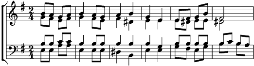

1. Au soir de Noël, sous le ciel en fête,
Lorsque le Sauveur leur fut annoncé,
Les bergers disaient: "Laissons là nos bêtes,
Allons voir là-bas ce qui s'est passé."
2. Ils allaient parlant de ce fait étrange,
Jeunes très pressés devançant les vieux,
Songeant au concert, aux appels des anges,
Derrière eux, laissant Simon le boiteux.
3. Les voilà rangés dans la pauvre étable,
Entonnant des airs sur leurs chalumeaux,
Et quand vient Simon, fatigué, minable,
La Vierge l'invite auprès du berceau.
4. "Simon, ne crains pas, dit-elle à voix basse,
Pose ton bâton et viens près de lui."
Le perclus sans peine avance et se place;
Il ne souffre plus, se tient sans appui.
5. D'un de ses moutons, portant la parure,
A l'Enfant divin, il en fait cadeau;
La Vierge en tissa l'habit sans couture
Qui vêtit Jésus, le divin Agneau.